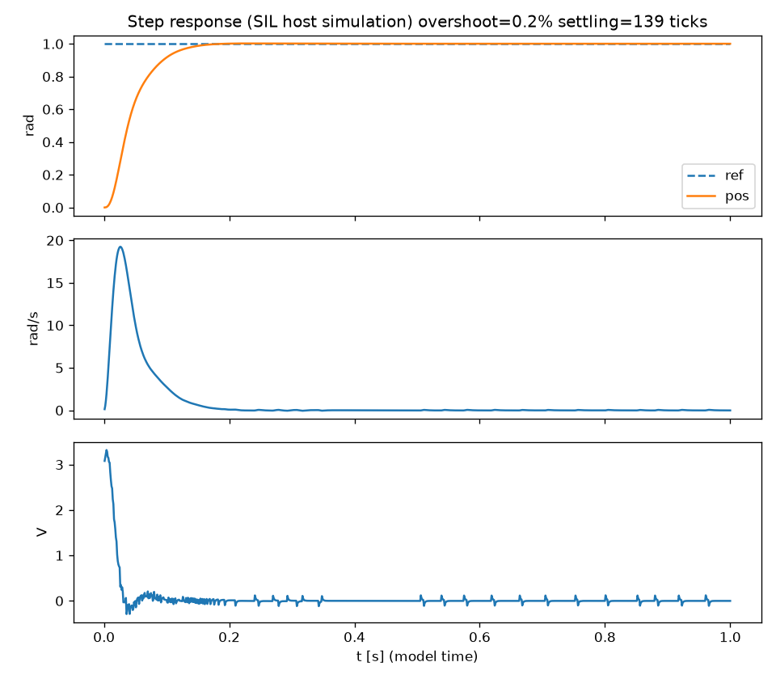
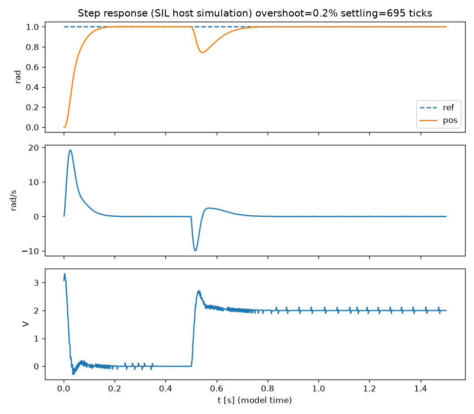
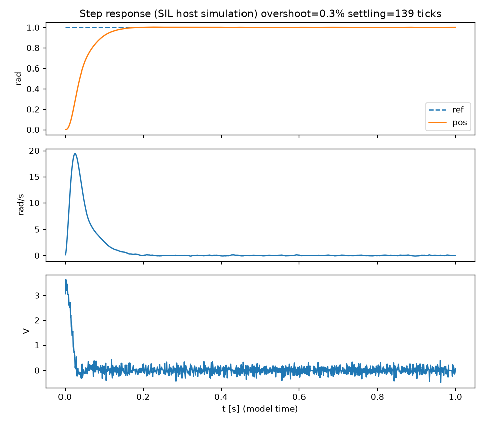

Phần 5 — Mô phỏng vòng kín, tuning và đồ thị
Chạy plant + encoder + cascade trong một mô phỏng vòng kín, tuning gain, đo overshoot/settling/sai số xác lập và khóa kết quả bằng test tự động.
Mô phỏng vòng kín trên host (plant + encoder + bộ ước lượng tốc độ + cascade), chương trình sim_closed_loop xuất CSV, tools/plot_step.py tính chỉ số và vẽ đồ thị. Bộ gain mặc định đã chốt và được test tự động khóa lại: bước 1 rad → overshoot 0,21 %, settling 139 tick, sai số xác lập 0,19 count; cả kịch bản tải ngoài và nhiễu encoder đều đạt.
1. Mục tiêu và cách làm
Mục tiêu (plan M1 Phần 5): chọn gain cho cascade và chứng minh bằng test tự động (không chỉ nhìn đồ thị) rằng: overshoot < 10 %, settling ≤ ngưỡng đã chốt, sai số xác lập ≤ 1 count; thêm hai kịch bản — tải ngoài bậc thang (độ cứng) và nhiễu encoder bật.
- Viết thư viện mô phỏng
sim_loop.c: mỗi tick 1 ms chạy plant → encoder → bộ ước lượng tốc độ → cascade → điện áp → plant, đúng thứ tự mà node sẽ chạy ở Phần 6. - Viết
sim_closed_loop(CLI) xuất CSVt,ref,pos,vel,v,countcho 3 kịch bảnstep | load | noise. - Viết chương trình quét (sweep) lưới gain để tìm vùng chạy tốt, chọn gain, ghi vào
cascade_default_params. - Viết
test_step_response.ckhóa các ngưỡng; viếttools/plot_step.pytính chỉ số từ CSV và vẽ PNG.
2. Kiến thức 1 — Chỉ số đáp ứng bậc thang
Cho tham chiếu nhảy từ 0 lên \(r\) (bước \(r=1\) rad). Ba chỉ số dùng trong dự án:
| Chỉ số | Định nghĩa | Ý nghĩa |
|---|---|---|
| Overshoot | \(\dfrac{y_{max}-r}{r}\times100\%\) (không âm) | Vọt lố; quan trọng với cơ cấu có giới hạn hành trình. |
| Settling time | Thời điểm cuối cùng đáp ứng còn ra ngoài dải ±2 % quanh \(r\) | Bao lâu thì "ổn định". Lấy lần ra ngoài cuối cùng để dao động tắt dần không bị tính sớm. |
| Sai số xác lập | \(|r-y_{\infty}|\) khi \(t\to\infty\); ở đây đo ở cuối mô phỏng, đổi ra count | Độ chính xác cuối cùng; ngưỡng ≤ 1 count (1 count = 2π/4096 ≈ 1,53 mrad). |
Tất cả đo bằng mẫu của mô hình 1 ms (tick), không bằng giây thật — nên tiêu chí tất định và tái lập hoàn toàn trên mọi máy.
3. Kiến thức 2 — Lượng tử hóa encoder và ước lượng tốc độ
Bộ điều khiển không thấy vị trí thật mà thấy count nguyên (4096 count/vòng). Hệ quả:
- Lượng tử hóa vị trí: sai số ±½ count ≈ ±0,77 mrad.
- Tốc độ từ vi phân count: \(\hat\omega=\Delta\text{count}\cdot\frac{2\pi}{4096}/\Delta t\). Với \(\Delta t=1\) ms, một count chênh tương ứng \(1{,}53\) rad/s — nhiễu tốc độ rất lớn so với tốc độ làm việc cỡ 10–30 rad/s.
- Lọc thông thấp bậc 1 (
speed_estimator) giảm nhiễu nhưng thêm trễ pha vào vòng tốc độ:$$\hat\omega_k=\hat\omega_{k-1}+\alpha\,(\omega_{raw,k}-\hat\omega_{k-1}),\quad \tau\approx\Delta t\,\frac{1-\alpha}{\alpha}$$\(\alpha=0{,}2\Rightarrow\tau\approx4\) ms; \(\alpha=0{,}5\Rightarrow\tau\approx1\) ms.
Đây là mâu thuẫn trung tâm của tuning: lọc mạnh → ít nhiễu nhưng trễ lớn → vòng trong dễ mất ổn định; lọc nhẹ → nhanh nhưng nhiễu lọt vào điện áp.
4. Kiến thức 3 — Tuning cascade
Plant mặc định (R=2 Ω, Kt=Ke=0,05, J=5·10⁻⁵, b=2·10⁻⁴): độ lợi tĩnh tốc độ/điện áp \(\dfrac{K_t}{Rb+K_tK_e}\approx17{,}2\) rad/s/V; hằng số thời gian cơ \(\approx\dfrac{JR}{K_tK_e}\approx40\) ms.
- Tuning vòng trong (tốc độ) trước: Kp vòng tốc độ quyết định băng thông; Ki xử lý tải. Băng thông phải nằm xa cực của bộ lọc ước lượng.
- Khóa vòng trong, rồi tuning vòng ngoài (vị trí): Kp vị trí ≈ băng thông mong muốn của vị trí (rad/s), nhỏ hơn băng thông vòng trong 5–10 lần.
- Kiểm tra bằng cả ba kịch bản — đừng chỉ tối ưu một kịch bản sạch.
5. Code mô phỏng
5.1 Cấu hình kịch bản và kết quả (sim_loop.h)
typedef struct {
float step_rad; /* position reference step at t=0 */
float t_end_s;
float load_nm; /* external load torque step (0 = none) */
float load_t_s; /* time the load is applied */
float noise_std_rad; /* encoder noise, 0 = off */
uint32_t seed;
float speed_alpha; /* speed estimator filter */
cascade_params_t ctrl;
plant_params_t plant;
} sim_cfg_t;
typedef struct {
float overshoot_pct; /* (peak - step)/step*100, <0 clamped to 0 */
float settling_s; /* last time outside +-2% band of step; (t_end if never settles) */
float ss_error_counts; /* |ref - theta| at end, in encoder counts */
float max_dev_after_load_rad; /* max |ref - theta| after load applied (0 if none) */
float v_peak;
} sim_result_t;tests/control/sim_loop.h
5.2 Vòng mô phỏng (sim_loop.c)
int sim_run(const sim_cfg_t *cfg, sim_result_t *out, FILE *csv)
{
plant_params_t pp = cfg->plant;
plant_state_t ps;
plant_reset(&ps);
cascade_state_t cs;
cascade_reset(&cs);
encoder_params_t ep = { .counts_per_rev = SIM_COUNTS_PER_REV, .noise_std_rad = cfg->noise_std_rad,
.seed = cfg->seed, .force_stuck = false };
encoder_state_t es;
encoder_reset(&es, &ep);
speed_estimator_t se;
speed_estimator_reset(&se, cfg->speed_alpha);
const int n = (int)(cfg->t_end_s / SIM_DT_S + 0.5f);
const float band = 0.02f * fabsf(cfg->step_rad);
float peak = 0.0f, vpeak = 0.0f, maxdev = 0.0f;
int last_out = 0;
float v = 0.0f;
pp.load_torque_nm = 0.0f;
for (int k = 0; k < n; k++) {
const float t = (float)k * SIM_DT_S;
if (cfg->load_nm != 0.0f && t >= cfg->load_t_s) {
pp.load_torque_nm = cfg->load_nm;
}
const int32_t count = encoder_step(&es, &ep, ps.position_rad);
const float vel_meas = speed_estimator_step(&se, count, SIM_DT_S, SIM_COUNTS_PER_REV);
const float pos_meas = (float)count * TWO_PI / (float)SIM_COUNTS_PER_REV;
v = cascade_step(&cs, &cfg->ctrl, cfg->step_rad, pos_meas, vel_meas);
if (!plant_step(&ps, &pp, v, SIM_DT_S)) {
return 1;
}
const float err = cfg->step_rad - ps.position_rad;
if (ps.position_rad > peak) { peak = ps.position_rad; }
if (fabsf(v) > vpeak) { vpeak = fabsf(v); }
if (fabsf(err) > band) { last_out = k + 1; }
if (pp.load_torque_nm != 0.0f && fabsf(err) > maxdev) { maxdev = fabsf(err); }
if (csv != NULL) {
fprintf(csv, "%.4f,%.6f,%.6f,%.6f,%.6f,%d\n", (double)(t + SIM_DT_S),
(double)cfg->step_rad, (double)ps.position_rad,
(double)ps.velocity_rad_s, (double)v, (int)count);
}
}
const float step = cfg->step_rad;
out->overshoot_pct = (step != 0.0f) ? fmaxf(0.0f, (peak - step) / step * 100.0f) : 0.0f;
out->settling_s = (float)last_out * SIM_DT_S;
out->ss_error_counts = fabsf(cfg->step_rad - ps.position_rad) * (float)SIM_COUNTS_PER_REV / TWO_PI;
out->max_dev_after_load_rad = maxdev;
out->v_peak = vpeak;
return 0;
}tests/control/sim_loop.c
Điểm cần chú ý: (1) vòng điều khiển chỉ thấy count và tốc độ ước lượng, không thấy trạng thái thật của plant; (2) các chỉ số tính trên vị trí thật của plant, để lượng tử hóa không che sai số; (3) tải ngoài được bật tại load_t_s bằng cách đổi load_torque_nm của plant giữa chừng.
6. Quá trình tuning (bộ gain nháp → bộ gain chốt)
Bộ gain nháp của Phần 4 (Kp vị trí 20, PI tốc độ Kp=0,5 Ki=5, α=0,2) chạy thử cho kết quả xấu: overshoot 7,5 % nhưng settling 827 ms, sai số xác lập 3,3 count — đáp ứng dao động kéo dài (≈7 Hz) quanh giá trị đặt:
| t [s] | vị trí [rad] | tốc độ [rad/s] | V |
|---|---|---|---|
| 0,051 | 0,612 | 25,9 | −2,45 |
| 0,101 | 0,962 | −6,0 | −3,64 |
| 0,151 | 0,873 | −3,0 | 6,49 |
| 0,201 | 1,031 | 12,6 | −5,45 |
| 0,301 | 0,946 | 5,8 | 2,33 |
| 0,501 | 1,038 | −3,9 | −1,37 |
| 0,951 | 0,986 | −0,6 | 1,05 |
Giải thích hợp lý (chưa được chứng minh bằng phân tích hay thí nghiệm riêng, chỉ suy ra từ kết quả sweep): độ lợi vòng tốc độ quá cao (Kp·17,2 ≈ 8,6) khiến tần số cắt tiến sát cực của bộ lọc ước lượng, giảm biên pha; cộng với nhiễu lượng tử 1,5 rad/s làm vòng trong rung.
Sweep: chương trình quét 2 (α) × 4 (Kp tốc độ: 0,1–0,3) × 4 (Ki tốc độ: 1–8) × 4 (Kp vị trí: 6–20) = 128 tổ hợp, mỗi tổ hợp chạy 3 kịch bản (bước, nhiễu, tải), giữ những tổ hợp thỏa: overshoot < 8 % (< 9 % khi có nhiễu), settling < 200 ms (< 250 ms khi nhiễu), sai số xác lập < 1 count cả bước và tải. Nhiều tổ hợp thỏa; vùng tốt có Kp tốc độ thấp hơn bản nháp 2–5 lần.
Bộ chốt (cân bằng giữa overshoot, settling và độ cứng khi có tải):
| Tham số | Giá trị |
|---|---|
| Vòng vị trí (P) | Kp = 20; tốc độ đặt kẹp ±30 rad/s |
| Vòng tốc độ (PI) | Kp = 0,15; Ki = 4; kẹp ±12 V; integral_limit = 12 V |
| Bộ lọc tốc độ | α = 0,5 |
| Đa tốc độ | outer_divider = 5 |
void cascade_default_params(cascade_params_t *c)
{
if (c == NULL) {
return;
}
c->pos = (pid_params_t){ .kp = 20.0f, .ki = 0.0f, .kd = 0.0f, .dt_s = 0.001f,
.out_min = -30.0f, .out_max = 30.0f,
.integral_limit = 0.0f, .d_alpha = 1.0f };
c->vel = (pid_params_t){ .kp = 0.15f, .ki = 4.0f, .kd = 0.0f, .dt_s = 0.001f,
.out_min = -12.0f, .out_max = 12.0f,
.integral_limit = 12.0f, .d_alpha = 1.0f };
c->pos_min_rad = -6.2831853f;
c->pos_max_rad = 6.2831853f;
c->volt_rate_v_per_tick = 0.0f;
c->outer_divider = 5U;
}common/control/pid.c
7. Kết quả
Bước 1 rad, 1 tick = 1 ms, SIL host (số liệu từ test_step_response và sim_closed_loop):
| Kịch bản | Overshoot | Settling | Sai số xác lập | Ghi chú |
|---|---|---|---|---|
| Bước | 0,21 % | 139 tick | 0,19 count | Vpeak ≤ 12 V |
| Tải ngoài 0,05 N·m tại t = 0,5 s | 0,21 % | 695 tick (tính từ lúc đặt bước, vì tải đến muộn) | 0,25 count | Lệch tối đa 0,26 rad rồi hồi phục về ref |
| Nhiễu encoder σ = 1,5 mrad (≈ 1 count) | 0,31 % | 139 tick | 0,87 count | Ngưỡng test: ≤ 2 count |



Đọc kết quả: overshoot rất nhỏ (0,2–0,3 %) vì vòng vị trí chỉ có P và vòng tốc độ có tích phân; điện áp lúc đầu bão hòa (rate/saturation) rồi tắt dần. Khi có tải, vị trí bị đẩy lệch rồi trở về — chính là tác dụng của tích phân ở vòng tốc độ.
8. Test tự động
tests/control/test_step_response.c (CTest: control_step_response) khóa các ngưỡng:
#define MAX_OVERSHOOT_PCT 10.0f
#define MAX_SETTLING_S 0.200f /* 200 model ticks */
#define MAX_SS_COUNTS 1.0f
#define MAX_SS_COUNTS_NOISE 2.0f /* noise sigma ~1 count: quantisation+noise floor */tests/control/test_step_response.c
- Bước: overshoot < 10 %, settling ≤ 200 tick, sai số ≤ 1 count, Vpeak ≤ Vmax.
- Tải: overshoot < 10 %, quay về ref (≤ 1 count), lệch tối đa < 0,5 rad.
- Nhiễu: overshoot < 10 %, settling ≤ 250 tick, sai số ≤ 2 count.
- Tất định: chạy lại cùng seed → cùng kết quả (
==, không dung sai).
9. Công cụ vẽ đồ thị
tools/plot_step.py đọc CSV và tính lại ba chỉ số bằng Python (độc lập với C), vẽ 3 panel (vị trí, tốc độ, điện áp). Chạy:
def metrics(d, band_frac=0.02):
ref = d["ref"][-1]
pos = d["pos"]
peak = max(pos)
overshoot = max(0.0, (peak - ref) / ref * 100.0) if ref else 0.0
band = band_frac * abs(ref)
last_out = 0
for i, p in enumerate(pos):
if abs(ref - p) > band:
last_out = i + 1
ss_counts = abs(ref - pos[-1]) * COUNTS_PER_REV / (2 * 3.141592653589793)
return {"overshoot_pct": overshoot, "settling_ticks": last_out, "ss_error_counts": ss_counts}tools/plot_step.py
Lệnh: sim_closed_loop step > step.csv; py tools/plot_step.py step.csv docs/results/m1_step_step.png (cần matplotlib, đã có trong tools/requirements.txt). Số từ Python trùng với test C (0,2087 % / 139 tick / 0,187 count), nên hai cách tính khớp nhau.
10. Quyết định, giới hạn, việc còn lại
- Settling đã chốt = 200 tick cho kịch bản bước. Plan yêu cầu ghi con số chốt vào
docs/requirements.md(hiện chỉ có REQ-FUN-002 về overshoot) — chưa sửa file này, chờ bạn xác nhận. - Bộ gain tối ưu theo mô hình plant minh họa, chưa nhận dạng từ motor thật.
- Tải thử 0,05 N·m (≈ 17 % mô-men cực đại 0,3 N·m) là giá trị chọn để minh họa; không có yêu cầu nào quy định.
- α = 0,5 là một phần của bộ gain; node ở Phần 6 phải dùng đúng cùng α (đã dùng).
- Không cần prefilter bước thang: overshoot đã < 1 %.
11. Tự kiểm tra
- Vì sao lấy lần ra ngoài dải ±2 % cuối cùng làm settling time?
- 1 count chênh trong 1 ms tương ứng bao nhiêu rad/s? Vì sao đó là vấn đề?
- Vì sao tuning vòng trong trước, rồi mới vòng ngoài?
- Vì sao bộ gain nháp dao động còn bộ chốt thì không (giả thuyết nào, thiếu bằng chứng nào)?
- Vì sao vị trí về đúng ref khi có tải dù vòng ngoài không có I?